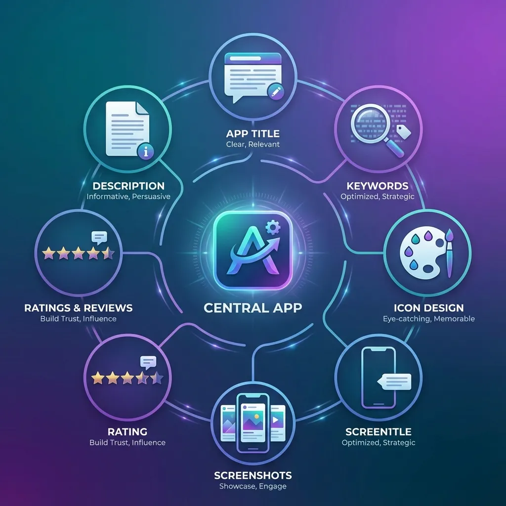
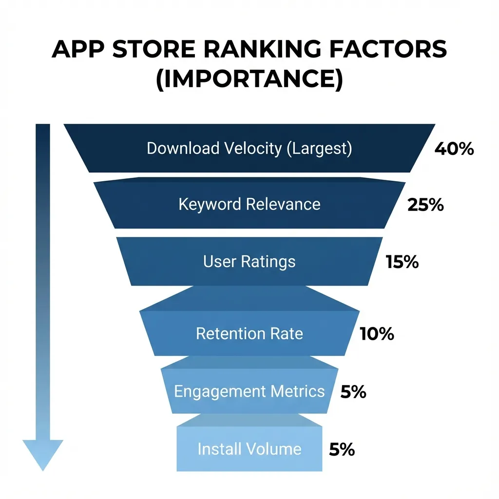
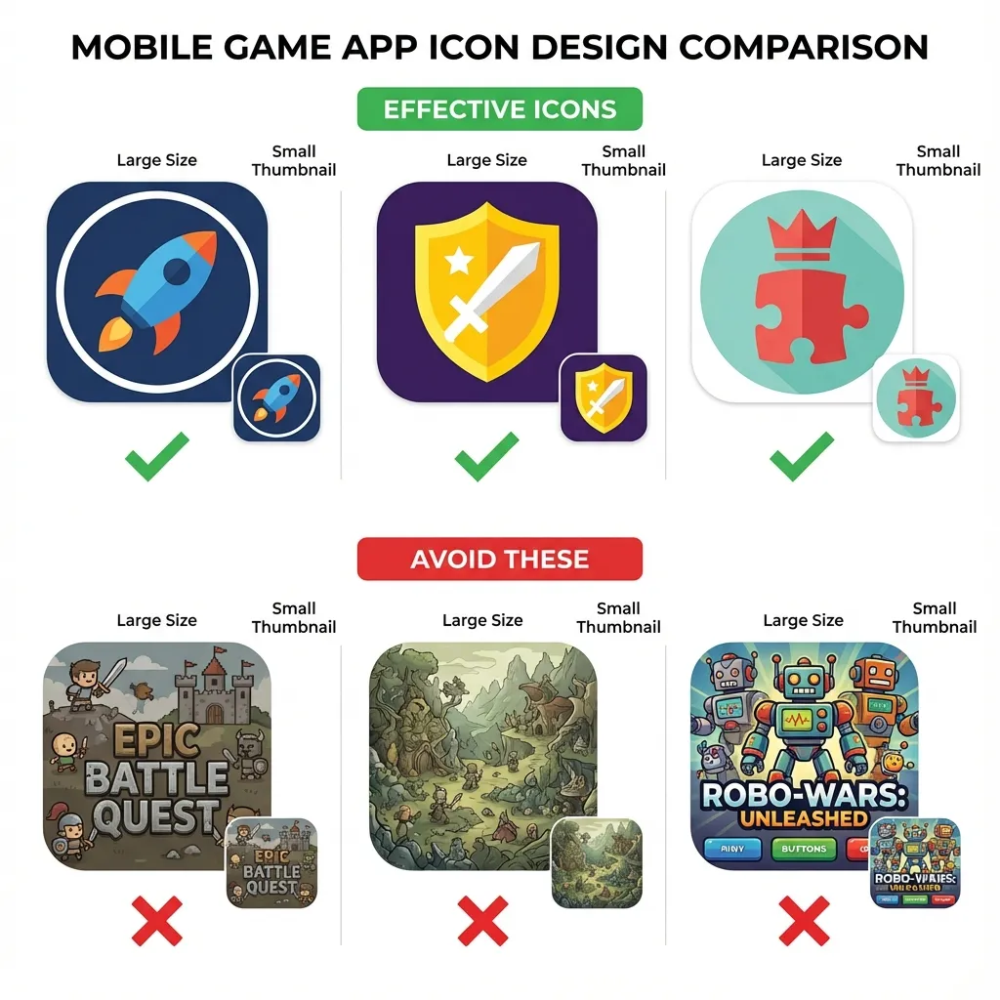
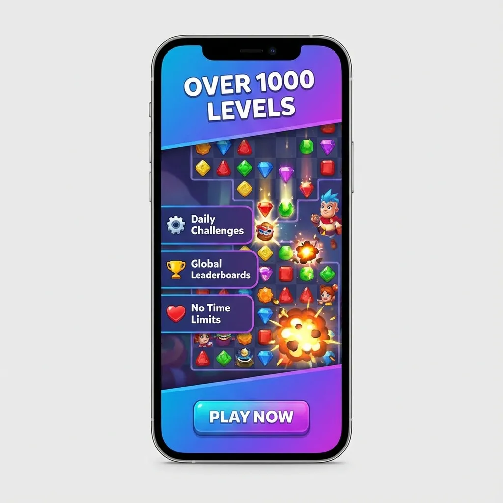
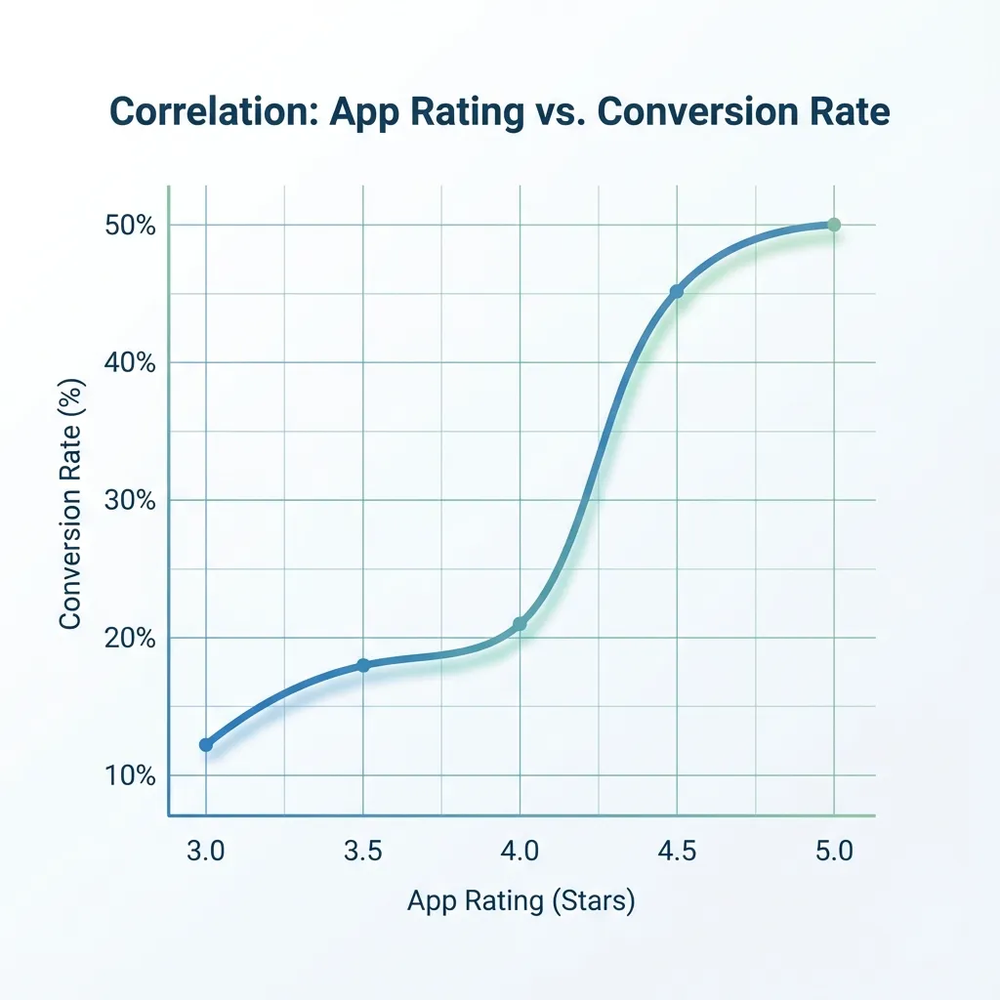
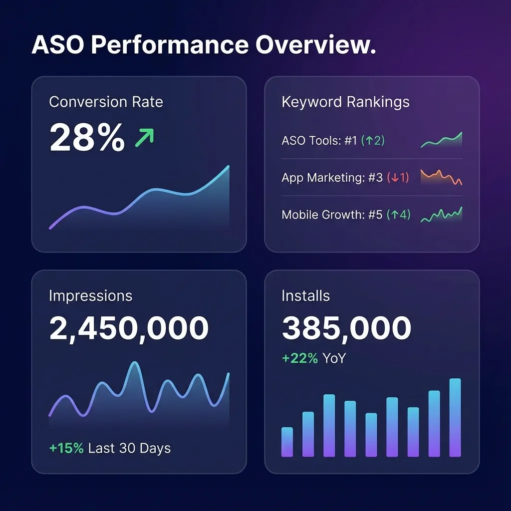
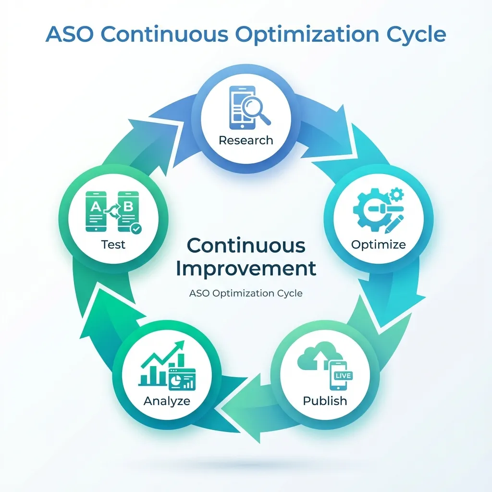

App Store Optimization (ASO) for Mobile Games 2026
MARKETINGApp Store Optimization (ASO) is the process of improving your mobile game's visibility in app stores to increase organic downloads. Just as SEO helps websites rank higher in Google search results, ASO helps your game appear prominently when users search the App Store or Google Play. With over 5 million apps competing for attention, effective ASO is the difference between a successful game and one that remains undiscovered.
For indie developers and small studios in Pakistan, ASO is crucial because it generates free, sustainable downloads without requiring large advertising budgets. While paid user acquisition costs continue rising globally, strong ASO delivers consistent organic traffic that improves your game's profitability and long-term sustainability. Mastering ASO fundamentals can increase your downloads by 200-500% without spending a single rupee on ads.
Understanding App Store Algorithms
How Google Play Search Works
Google Play's algorithm prioritizes apps based on relevance to search queries, download velocity, user engagement metrics, and quality signals. When users search for "puzzle game" or "racing game," Google Play evaluates millions of apps to determine which deserve top positions. The algorithm considers your game's title, description, category, user ratings, download trends, and retention metrics.
Download velocity—how quickly your game gains new installs—heavily influences rankings. Games experiencing rapid download growth receive algorithmic boosts, appearing higher in search results and recommendation sections. This creates a virtuous cycle where visibility drives downloads, which improves visibility further. Understanding this momentum-based ranking helps you plan launch strategies that trigger algorithmic promotion.
Apple App Store Ranking Factors
The Apple App Store uses similar but distinct ranking factors including keyword relevance, download volume, ratings and reviews, retention rate, and user engagement. Apple places greater emphasis on user experience metrics like session length, retention, and crash reports compared to Google Play. Games with strong Day 1 and Day 7 retention rates receive preferential treatment in search rankings and editorial features.
Apple's editorial team also manually curates featured apps and game recommendations. While algorithmic factors determine search rankings, human editors select games for "Game of the Day," category features, and seasonal collections. Exceptional visual quality, innovative gameplay, and cultural relevance increase your chances of editorial selection, which can generate tens of thousands of downloads overnight.
Keyword Research and Optimization
Keyword Research and Optimization

Finding High-Value Keywords
Effective ASO begins with identifying keywords that potential players actually search for. Use ASO tools like AppTweak, Sensor Tower, or Mobile Action to research keyword search volume, competition level, and ranking difficulty. Focus on keywords with moderate-to-high search volume but low-to-medium competition—these "sweet spot" keywords offer the best ranking opportunities for new games.
Analyze competitor keywords by examining top-ranking games in your genre. Note which keywords appear in their titles, subtitles, and descriptions. Tools can reveal hidden keywords competitors rank for even without explicitly including them in visible text. This competitive intelligence identifies proven keywords that drive downloads in your specific niche.
Long-Tail Keyword Strategy
Long-tail keywords are specific, multi-word phrases like "offline puzzle game for kids" or "racing game with real cars". While individually generating less search volume than generic terms like "puzzle" or "racing," long-tail keywords collectively drive substantial traffic with much lower competition. Players searching with specific terms also demonstrate clearer intent, resulting in higher conversion rates.
Incorporate 10-15 long-tail keywords throughout your game's metadata. Mix genre descriptors with gameplay mechanics, visual styles, and target audiences to cover diverse search intents. For example, a match-3 game might target "relaxing puzzle game," "offline matching game," "colorful jewel crush," and "casual brain teaser" to capture different player motivations.
Localized Keywords for Regional Markets
Localization extends beyond translating your game—it requires researching keywords in each target language. The literal translation of English keywords often differs from what local users actually search. For example, Pakistani and Indian players might search in Urdu, Hindi, or regional languages, requiring entirely different keyword strategies.
Prioritize localization for high-value markets matching your player demographics. For Pakistani developers, consider Urdu, Arabic, and regional South Asian languages alongside English. Research local gaming terminology, popular game genres in each region, and cultural preferences to identify location-specific keywords that competitors may overlook.
Optimizing Your Game Title and Subtitle
Crafting the Perfect App Title
Your game title is the single most important ASO element, carrying the most ranking weight for keywords. The optimal structure includes your brand name plus 2-3 high-value keywords, totaling under 30 characters for maximum impact. For example, "Fruit Merge: Puzzle Game" combines brand identity with genre keywords while remaining concise and memorable.
Balance keyword optimization with branding and memorability. Titles stuffed with keywords like "Puzzle Match 3 Jewel Crush Pop Free" may rank well initially but confuse users and damage brand recognition. Create a title that feels natural, sounds appealing when spoken aloud, and clearly communicates your game's core concept in both search results and friend recommendations.
Effective Subtitle Usage (iOS)
Apple App Store allows a 30-character subtitle appearing directly below your title. Use this prime real estate for additional high-value keywords that didn't fit in your title. The subtitle should complement your title while providing additional context about gameplay, unique features, or target audience. For example, subtitle "Addictive Merge & Match Fun" adds keywords while describing the experience.
Avoid redundancy between title and subtitle—each should contribute unique keywords to maximize coverage. If your title includes "puzzle," use subtitle space for related terms like "brain teaser," "matching game," or "logic challenge." This diversification helps you rank for multiple related searches without wasting limited character space.
Short Description Optimization (Android)
Google Play's short description (80 characters) appears in search results and must grab attention immediately. Front-load your most important keywords in the first sentence while creating compelling copy that encourages clicks. For example, "Relaxing puzzle game with 1000+ levels. Match colorful fruits and solve brain teasers offline!"
The short description balances keyword optimization with persuasive copywriting. While including target keywords improves search rankings, your primary goal is convincing searchers to click your listing over competitors. Highlight your unique selling proposition—what makes your game different or better than the dozens of similar titles in search results.
Icon Design That Converts
Visual Psychology of Icons
Your app icon is the first visual element users see and heavily influences click-through rates. Effective icons are simple, recognizable at small sizes, use high contrast colors, and clearly communicate the game's genre or theme. Icons should be distinctive enough to stand out in crowded search results where dozens of apps compete for attention simultaneously.
Test icon recognizability at actual display sizes—what looks clear at 1024x1024 pixels may become muddy at 60x60 pixels on mobile screens. Avoid complex details, thin lines, or small text that disappear at thumbnail size. Use bold shapes, limited color palettes (3-4 colors maximum), and clear focal points that remain visible even in small app store thumbnails.
Genre-Specific Icon Best Practices
Different game genres have established icon conventions that set user expectations. Puzzle games often use bright colors and geometric shapes; action games feature characters or weapons; strategy games show armies or buildings. While creative differentiation is valuable, completely ignoring genre conventions can confuse users about what type of game you're offering.
Analyze top-performing icons in your specific genre for patterns. Note common color schemes, composition styles, and symbolic elements. Use these insights as starting points, then add unique elements that differentiate your icon while maintaining genre familiarity. The goal is being recognizable as your genre while standing out from direct competitors.
A/B Testing Icon Variations
Never guess which icon performs best—systematically test variations using built-in app store A/B testing tools. Google Play Console offers icon testing directly, while Apple's Product Page Optimization allows testing up to three icon variations simultaneously. Test different color schemes, character poses, background styles, and compositional approaches to identify which drives highest conversion.
Run icon tests for minimum 7-14 days to gather statistically significant data across different times and user segments. Monitor not just click-through rate but also install conversion rate—an icon that attracts clicks but leads to immediate exits indicates misleading visuals. The winning icon balances attention-grabbing appeal with accurate game representation.
Screenshot and Video Optimization
Creating Compelling Screenshots
Screenshots are your primary storytelling tool, showing potential players exactly what gameplay looks like. The first 2-3 screenshots are most critical since they're visible without scrolling. Use these prime positions to showcase your game's most exciting, visually appealing, or unique moments—not tutorial screens, menus, or loading sequences.
Design screenshots with text overlays highlighting key features and benefits. Instead of raw gameplay captures, add captions like "1000+ Challenging Levels," "No WiFi Required," or "Compete with Friends Worldwide." These text overlays communicate value propositions immediately, especially important since many users browse with sound off or decide within seconds whether to install.
Screenshot Sequence Strategy
Structure your screenshot gallery to tell a cohesive story progressing from simple concept to complex features. Start with a clear hero image showing core gameplay, followed by screenshots demonstrating different game modes, progression systems, social features, and visual variety. This narrative structure guides users through your game's depth while maintaining engagement throughout the gallery.
Maintain visual consistency across all screenshots using matching layouts, fonts, and color schemes. Inconsistent screenshot design looks unprofessional and suggests poor game quality. Create screenshot templates that maintain brand identity while showcasing different content. This polished presentation builds trust and suggests the actual game shares the same quality standards.
App Preview Videos (iOS) and Promotional Videos
Video previews appear before screenshots and autoplay when users view your listing, making them incredibly impactful. The first 3-5 seconds are critical—immediately show exciting gameplay, not logos, splash screens, or slow introductions. Users scroll past boring videos instantly, so hook attention with action, color, and movement from the first frame.
Keep preview videos between 15-30 seconds focusing exclusively on gameplay. Avoid lengthy explanations, developer messages, or feature lists—show, don't tell. Include short text overlays highlighting unique mechanics or benefits, but let gameplay demonstrate your game's appeal visually. End with a clear call-to-action like "Download Now" or "Play Free" with visual emphasis.
Ratings and Reviews Management
The Impact of Ratings on Rankings
App store algorithms heavily weight average rating when determining search rankings. Games with 4.5+ star ratings receive significant algorithmic advantages over 3.5-star competitors, even with fewer total downloads. Both Apple and Google interpret high ratings as quality signals, promoting well-rated games more prominently in search results and recommendation algorithms.
Maintain your rating above 4.0 stars minimum, ideally targeting 4.3-4.5+ for competitive categories. Each 0.1 star improvement measurably impacts conversion rates—users instinctively trust higher-rated apps and skip lower-rated alternatives. Monitor your rating daily and investigate causes immediately when ratings decline, addressing critical bugs or gameplay issues before they tank your rankings.
Encouraging Positive Reviews
Strategically prompt satisfied players for reviews using in-game review requests. Timing is crucial—ask immediately after positive experiences like completing difficult levels, achieving personal bests, or unlocking rewards. Never interrupt during gameplay or ask immediately after frustrating moments when players are likely to leave negative reviews.
Limit review prompts to once every few weeks to avoid annoying players. Both app stores penalize excessive review requests, and frustrated users leave negative reviews specifically complaining about spam. Use native review APIs (StoreKit for iOS, In-App Review API for Android) which feel integrated and natural rather than intrusive popups that disrupt gameplay.
Responding to Negative Reviews
Respond professionally to negative reviews within 24-48 hours demonstrating active developer support. Address specific complaints, apologize for poor experiences, and explain fixes or workarounds. Potential players reading reviews see these responses and judge whether your team cares about user experience or ignores feedback.
Turn negative reviews into positive outcomes by solving problems publicly. When you fix a reported bug or implement requested features, reply to relevant reviews explaining the update. Many reviewers update their ratings after receiving helpful responses, and future readers see your commitment to improvement. This active engagement builds trust and partially mitigates negative review damage.
Localization for Global Reach
Which Markets to Localize First
Prioritize localization for markets showing organic downloads despite language barriers. Check your analytics to identify countries generating installs from your English listing—these represent markets with existing demand where localization could multiply downloads. Common high-value markets include Spanish-speaking countries, Portuguese (Brazil), French, German, Japanese, and Korean.
For Pakistani developers, consider regional South Asian languages including Urdu, Hindi, Bengali, and Arabic. These markets have rapidly growing smartphone adoption and gaming audiences but remain underserved by quality localized content. Investing in regional localization positions you advantageously in emerging markets with less competition than saturated Western markets.
Quality Localization vs Machine Translation
Invest in human translation or native-speaker localization rather than relying on machine translation. Google Translate and similar tools produce awkward, unnatural text that damages credibility and conversion rates. Native speakers create culturally appropriate descriptions that resonate emotionally, use local gaming terminology correctly, and avoid embarrassing translation errors.
Localize all metadata including title, description, keywords, screenshots text, and review responses. Partial localization where some elements remain in English creates inconsistent, unprofessional impressions. Users in non-English markets expect complete localization—anything less suggests the game itself lacks language support, reducing conversion rates significantly.
Cultural Customization Beyond Translation
Effective localization adapts visual elements, not just text. Consider creating region-specific screenshots, icons, or promotional videos featuring culturally relevant imagery, characters, or scenarios. For example, games localized for Middle Eastern markets might use Arabic script in screenshots and adjust character designs to match local preferences.
Research cultural sensitivities and preferences in each target market. Color symbolism, character representations, religious considerations, and acceptable content vary dramatically across cultures. Localizing without cultural awareness can trigger negative reactions or app store rejections in specific regions, wasting localization investments.
Category and Metadata Optimization
Choosing the Right App Category
Select the category where your game can realistically rank in top charts, not necessarily the most obvious choice. If your game fits multiple categories, research competition in each before deciding. A innovative puzzle game might rank better in "Board" or "Casual" categories with less competition than the oversaturated "Puzzle" category.
Primary category selection impacts search rankings and chart positions but can be changed later if needed. Monitor your category performance and competitor movements monthly. If your game struggles to chart in one category but performs well in search, experiment with alternative category placements to find optimal positioning.
Promotional Text and What's New
Google Play's promotional text (170 characters) appears above your description and is editable anytime without app updates. Use this space for time-sensitive promotions, seasonal events, new feature announcements, or A/B testing messaging variations. Update promotional text regularly to highlight current content and demonstrate active development.
The "What's New" section for update notes influences user decisions to update and provides ASO value. Write update notes as marketing copy highlighting exciting new features, improvements, and content additions rather than technical jargon. Phrases like "Added 50 new levels," "Improved performance," and "Fixed bugs" inform users while reinforcing your game's ongoing development and support.
Measuring ASO Performance
Key ASO Metrics to Track
Monitor impression-to-install conversion rate as your primary ASO health metric. This percentage shows how many users who see your app listing actually install it, directly measuring your ASO effectiveness. Industry averages range from 15-30%, with exceptional listings achieving 40%+ conversion. Track conversion separately for organic search, browse, and external traffic sources.
Search ranking positions for target keywords determine your visibility and download potential. Use ASO tools to track daily rankings for your 10-15 most important keywords. Ranking improvements indicate successful optimization, while declining positions signal increased competition or algorithm changes requiring strategic adjustments.
A/B Testing Best Practices
Test one variable at a time using controlled A/B experiments. Changing multiple elements simultaneously (icon, screenshots, description) makes it impossible to determine which change drove performance differences. Systematic single-variable testing builds knowledge about what resonates with your specific audience.
Prioritize testing high-impact elements in this order: icon, first screenshot, app preview video, title/subtitle, remaining screenshots. These elements have the greatest influence on conversion rates, so optimizations yield the largest download increases. Test continuously—even after finding winning variations, regular testing adapts to seasonal trends, competitor changes, and evolving user preferences.
Competitive Monitoring
Track 5-10 direct competitor apps monitoring their ASO changes, rankings, and visible performance. When competitors update icons, screenshots, or keywords, analyze the changes and results. Successful competitor strategies provide validated insights you can adapt, while failed experiments teach valuable lessons without costly mistakes.
Set up alerts for competitor app updates, ranking changes, and feature acquisitions. ASO tools offer competitor tracking features automating this monitoring. Understanding your competitive landscape helps you identify gaps in the market, anticipate trends, and position your game distinctively against alternatives.
Advanced ASO Strategies
Cross-Promotion with Other Apps
If you have multiple published games, cross-promote them to share user bases. Include tasteful promotional banners or end-cards suggesting your other titles to engaged players. Users who enjoy one of your games are predisposed to trying others, generating high-quality installs that boost rankings and retention metrics.
Partner with non-competing developers for reciprocal cross-promotion. Games in complementary genres can promote each other, exposing both to relevant new audiences. For example, a puzzle game and a casual arcade game might share similar demographics but don't directly compete, making cross-promotion mutually beneficial.
Leveraging Social Proof
Highlight awards, press mentions, download milestones, and user testimonials in your description and screenshots. Social proof like "Over 1 Million Downloads," "Featured by Google Play," or "4.5 Stars from 50,000+ Reviews" builds credibility and trust. Users are more likely to install apps that others have validated through downloads and positive ratings.
Create screenshot overlays showcasing prestigious features or awards. A badge reading "Editor's Choice" or "Top 10 Puzzle Game" immediately communicates quality and authority. These trust signals reduce perceived risk, especially important for new studios without established brand recognition.
Seasonal and Event-Based Optimization
Update metadata seasonally to capitalize on trending searches. During holidays like Christmas, Ramadan, or Diwali, incorporate seasonal keywords and update screenshots with themed visuals. App stores algorithmically promote seasonally relevant content, providing traffic boosts for timely optimizations.
Create limited-time events within your game and reflect them in app store presence. Update screenshots showing Halloween events in October or summer-themed content in June. These regular refreshes signal active development to both algorithms and users, improving rankings while maintaining visual relevance.
Common ASO Mistakes to Avoid
Keyword Stuffing and Spammy Tactics
Never stuff keywords unnaturally into titles, descriptions, or keyword fields. App stores penalize obvious manipulation, pushing spammy listings lower in rankings or removing them entirely. Write metadata for humans first, incorporating keywords naturally where they fit contextually rather than forcing awkward keyword lists.
Avoid repeatedly using the same keywords across title, subtitle, and description. This wastes limited character space and provides no additional ranking benefit—app store algorithms count unique keywords, not repetitions. Diversify keyword usage to rank for maximum total search terms within your character limits.
Misleading Screenshots or Descriptions
Never show gameplay, features, or graphics that don't exist in your actual game. Misleading marketing generates installs but causes immediate uninstalls, negative reviews, and poor retention metrics that tank your rankings. App stores increasingly crack down on deceptive marketing, sometimes removing apps that systematically mislead users.
Ensure screenshots represent actual in-game visuals accurately. While adding text overlays and highlighting features is acceptable, the underlying gameplay shown must reflect real player experience. Users who feel deceived leave scathing reviews specifically calling out false advertising, permanently damaging your reputation.
Ignoring Negative Feedback
Dismissing negative reviews or ignoring common complaints guarantees ASO failure. Recurring negative feedback about bugs, difficulty spikes, excessive ads, or missing features indicates real problems requiring fixes. Addressing these issues improves ratings, reduces negative reviews, and strengthens overall ASO performance more than any metadata optimization.
Use negative reviews as free user research identifying improvement opportunities. When multiple reviews mention the same problem, prioritize fixing it in upcoming updates. Then respond to those reviews explaining the fix, potentially converting detractors into advocates who update their ratings and recommend your improved game.
Regional ASO Considerations for Pakistani Developers
Competing in Local Markets
Pakistani developers have natural advantages in underserved South Asian markets. Create content specifically for Pakistani, Indian, and regional audiences incorporating local culture, languages, and preferences. While global competition is intense, regional specialization allows you to dominate local charts with culturally relevant games.
Optimize for Urdu keywords despite smaller search volumes. Less competition in Urdu searches means easier top rankings, and Pakistan's growing smartphone market represents substantial untapped potential. Being early in localized ASO positions you advantageously as more Pakistani users shift to mobile gaming.
Balancing Global and Local Strategies
Maintain English optimization for global reach while adding regional localizations. Don't sacrifice international markets to focus exclusively on Pakistan—the largest revenue opportunities remain in Western markets, East Asia, and established gaming regions. A balanced approach maximizes both local cultural advantages and global commercial potential.
About Vexillogic: We create mobile games optimized for maximum App Store and Google Play visibility. Our ASO expertise helps games achieve strong organic download growth without large advertising budgets. Contact us to develop your next mobile game with built-in ASO best practices.